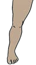
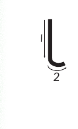

Lesson 10: Letter l
Lesson 10
Letter l

Draw, identify, or describe the pattern for the letter l; explore a teacher-provided raised-line version before answering.
Trace or finger spell the letter l; explore a teacher-provided raised-line letter model before answering.

Copy or finger spell the letter l using the writing lines, keyboard, or braille.